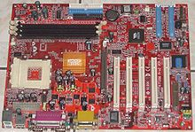
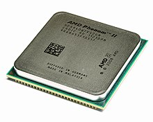
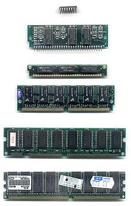
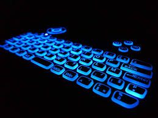
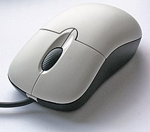

Kompyuter (inglizcha: computer — „hisoblayman“) — oldindan berilgan dastur boʻyicha ishlaydigan avtomatik qurilma. Elektron hisoblash mashinasi (EHM) bilan bir xildagi atama. Biroq, kompyuter hisoblash ishlarini bajarishdan tashqari uning funksiyasi ancha keng. EHMlarning rivojlanishida kompyuter ning bir necha avlodlarini koʻrsatish mumkin. Bu avlodlar element turlari, konstruktiv-texnologik xususiyatlari, mantiqiy tuzilishi, dastur taʼminoti, texnik tafsilotlari, texnikadan foydalanishning qulaylik darajasi bilan bir-biridan farq qiladi. Kompyuterning dastlabki avlodida (Ural-1, Minsk-2, BSEM-2) asosiy element elektron lampa boʻlgani uchun u juda katta joyni egallagan edi. Soʻngra bu lampa oʻrnida tranzistorlar ishlatilgan kompyuter (Razdan-2, M-220, Minsk-22 va boshqalar), integral mikrosxemalar ishlatilgan kompyuter (IBM-360, 1BM-370, (AQSh), YESEVM (Rossiya) va boshqalar, integratsiya darajasi katta boʻlgan integral sxemalar oʻrnatilgan shaxsiy kompyuterlar paydo boʻldi. Shaxsiy kompyuter (mikro va -mikro EHM) tushunchasi 20-asr 70-yillar oxiridan boshlab keng tarqala boshladi. Shaxsiy kompyuterning keyingi avlodlarida mikroelektron va biosxemalardan foydalanildi; ularning hajmi kitob kattaligidek hajmtacha kichraydi, massasi esa 3,5 kg gacha kamaydi. 1981-yil IBM shirkati shaxsiy kompyuterning yanada takomillashgan modellarini ishlab chikara boshladi. Keyinchalik boshka firmalar IBM bilan PC biriktirilgan kompyuterni, Apple shirkati esa Macintosh (talaffuzi: „Makintosh“) yoki oddiygina „maki“ deb ataladigan kompyuterni yaratishdi. 21-asr boshlarida dunyoda oʻnlab million shaxsiy kompyuterlar, 1 millionga yaqin EHM (shu jumladan, bir necha oʻn superEVM) boʻlgan. Kompyuterlar masalalarni yechishda foydalaniladigan komponentlar (tarkibiy qismlar) tarkibi va tavsifi jihatdan bir-biridan farq qiladi. Murakkab masalalarni yechishda kuchli qurilmalar urnatilgan kompyuterdan, qujjatlarni bosishda harf bosish qurilmasi boʻlgan kompyuterdan foydalaniladi. Istalgan kompyuter tizimlar bloki, monitor va klaviaturadan iborat boʻladi. Kerak boʻlganda boʻlardan tashqari boshqa qurilmalar ham ulanadi. Tizimlar bloki da kompyuterning ishlashi uchun zarur muhim qismlar (diskni yuritkich, vinchester — qattiq disk, mantiqiy amallarni bajaruvchi mikrosxemalar) boʻlib, unga qolgan qurilmalar ulanadi. Monitor (displey) matn va turli tasvir kurinishidagi axborotlarni ekranda aks ettiradi. Klaviatura kompyuterga buyruq va turli axborotlarni kiritadi. Koʻpincha, kompyuter tarkibiga „sichqon“ manipulyatori va printer kiritiladi. „Sichqon“ ikki yoki uchta knopkasi (tugmasi) boʻlgan qurilma boʻlib, uning yordamida kompyuter ishini osonlashtiradi. Printer esa axborotlarni qogʻozga tushirish uchun xizmat qiladi. Zamonaviy kompyuterlar, asosan, toʻrt qurilma: boshqarish, protsessor, xotira va kiritish-chiqarish qurilmalaridan iborat. Boshqarish qurilmasi kompyuterning barcha qurilmalari ishini muvofiklashtiradi va boshqaradi. Protsessor kompyuterning asosiy qurilmasi boʻlib, axborotlarga ishlov beradi, yaʼni hisoblash amallari, solishtirish va uzatish kabi arifmetikmantiqiy amallarni bajaradi. Bu qurilma bajaradigan amallar dasturlar orqali belgilanadi. Xotira qurilmasi axborotlarga ishlov berish vaqtida uni saqlash uchun xizmat qiladi. Foydalanayotgan dasturlar ichki xotirada, uzoq, muddat saqlanadigan axborotlar tashqi xotira (disketalar)da saqlanadi. Ichki va tashqi xotiralarda axborot almashinuvi kiritish — chiqarish qurilmalari yordamida amalga oshiriladi.
|
|
Kompyuter oʻyinlari ham keng tarqalgan. Ularning mingdan ortiq xili mavjud; ular yordamida koʻp narsalarni amaliy bilib olish va amaliy tajribalarni orttirish mumkin (qarang: Kompyuter oʻyinlari). Kompyuterning universalligi axborotni aniq maqsad yoʻlida qayta ishlay olishiga, inson faoliyatining turli sohalarida ishlab chiqarishni tubdan oʻzgartirishga, kishilarning ishini osonlashtirishga imkon beradi. Ob-havoni oldindan aytib berishda meteostyalar va sunʼiy yoʻldoshlardan keladigan axborotlarni yigʻib va tahlil qilib, juda katta hisoblash ishlarini bajaradi va inson uchun qulay boʻlgan shaklda ifodalaydi (qarang: Intranet, Internet, Kompyuter tarmogʻi).
Videonazorat qurilmasi, monitor — telekoʻrsatuvlar oldidan koʻrsatuvlar trakti tayyorlanayotgan, sozlanayotgan, koʻrsatuvlar ketayotgan paytda efirga uzatish nuqgalari (uzatuvchi kameraning chiqishi va b.)dagi tasvirlar sifatini nazorat ekranlarida vizual (koʻrib turib) nazorat qilish uchun moʻljallangan qurilma. Oq-qora televideniyeda ham, rangli televideniyeda ham V. q. uchun ushbu umumiy uzellar xos: kineskop, tasvir signallari kuchaytirgichi, satr va kadrni yoyish bloki, sinxronlash impulslari selektori va uzellarni elektr bilan taʼminlash manbai. Oddiy televizion kabul qilgichdan farqli ravishda V. q.da oraliq va yuqori tasvir hamda tovush chastotalarini kuchaytirish kaskadlari boʻlmaydi. V. q. telemarkazda bir necha uzatuvchi kamera ishlayotgan paytda rej. ga bir necha tasvirdan bittasini tanlab olishga, umuman telekoʻrsatuvlarni boshkarib turishga yordam beradi. Bazi ishlab chiqarilayotgan monitorlar masalan Artel va Samsung monitorlari ikki xil optimal o`lchamga ega:19 dyuimli monitorlar-1366x768,va 22 dyuimli monitorlar-1920x1080.Yani,22 dyuimli monitor ichida 1920 taeniga va 1080 ta bo`yiga piksel bor degani. Piksel-bu bitta nuqta,aniqrog`i, displeydagi nuqta. Piksel o`z navbatida 3ta subpikseldan iborat. Ko`rib turganimizdek 3ta subpiksel bu 3ta rang: qizil, yashil va ko`k.(RGB) Shu 3ta rang ochlashib-to`qlashib bir necha million xil rangni ifoda eta oladi.
Ona plata "materinka" (inglizcha: motherboard — bosh plata; hisoblanadi. sleng. ona - barcha chip va qurilmalarni bir biriga ulash uchun asos) — Shaxsiy kompyuterning, noutbuk, telefon, planshetlarning asosiy qurilmalari — tezkor xotira, qattiq disk, chiplar, slot, kuler, ulash portlari va boshqa qurilmalar oʻrnatiladigan koʻp qatlamli muxr plata. Aynan ona plata bir-biridan farq qiluvchi qurilmalarni birlashtiradi va boshqaradi.
Ona plata qurilmasining asosiy qismini o‘z ichiga oladi, masalan, kompyuterda - protsessor, tizim shinasi yoki avtobuslari, RAM, "o‘rnatilgan. " periferik kontrollerlar , xizmat ko'rsatish mantig'i - va Kengaytirish kartalari deb nomlangan qo'shimcha almashtiriladigan platalarni ulash uchun ulagichlar, odatda umumiy avtobus yoki avtobuslarga ulanadi - masalan, 2000-yillarning boshlarida, IBM PC-mos keluvchi kompyuter, qoida tariqasida, uch xil avtobusning ulagichlarini olib yurardi - ISA, PCI va AGP. Kengaytirish kartasi uyalarini oddiygina ulaydigan Backplane/Card dan farqli o'laroq, anakart har doim ularni o'rnatish uchun faol komponentlar yoki ulagichlarni olib yuradi. Ingliz tilidagi adabiyotlarda anakartlarni kengaytirish va o'zgartirish qobiliyatiga ega bo'lgan anakartlarning o'ziga ("ana platalar") va bunday imkoniyatlarga ega bo'lmagan "asosiy platalar"ga ("mayin platalar") bo'lish odatiy holdir. to‘liq o‘zgarmas tizimni ifodalaydi.
Protsessor inglizchada „Process“ soʻzidan kelib chiqqan boʻlib, „jarayon“ — jarayonni amalga oshiruvchi, boshqaruvchi maʼnolarini bildiradi. Kompyuter Protsessori asosan kompyuterda boʻladigan jarayonlarni amalga oshirish va boshqarish vazifalarini bajaradi. Asosiy oʻlchov birligi chastota hisoblanadi. Protsessor chastotasi uning maʼlum vaqt ichida nechta amalni bajara olishini ifodalaydi.
Protsessor (lot. processus — surilish) — elektron mashinaning dastur (programma) da koʻzda tutilgan amallar; informatsiyani oʻzgartirish, barcha hisoblash jarayonlarini, xisoblash mashinasidagi boshqa qurilmalarning ishini boshqarib turish uchun moʻljallangan markaziy qurilmasi. Asosiy qismlari: arifmetikmantiqiy qurilma va boshqarish qurilmasi. Arifmetikmantiqiy qurilmada axborot arifmetika va mantiq jihatidan qayta ishlanadi. Boshqarish qurilmasi xotiradagi axborotlarni chiqarish tartibini belgilaydi, boshqaruvchi signallarni ishlab chiqadi, mashinadagi qurilmalarning ishini uygʻunlashtiradi, dasturni uzish signallarini qayta ishlaydi, xotiradagi axborotlarni muhofazalaydi, P. ishini nazorat qiladi. P. da bulardan tashqari, oʻta tezkor xotira qurilmasi va tashkiliy bloklar ham bor.
Tezkor xotira yoki RAM (inglizcha: Random Access Memory, RAM) — oʻqish yoki yozish uchun uning manzili boʻyicha istalgan yacheykaga bir vaqtning oʻzida (har doim bir vaqtning oʻzida, joylashuvidan qatʼiy nazar) kirish imkonini beruvchi kompyuter xotirasining turlaridan biridir[1]. Protsessor qisqa vaqt ichida koʻp ishlatiladigan jarayonlarni tezkor xotiraga yuklab oladi va bu kompyuterni ishlashini tezlashtirish uchun xizmat qiladi. Tezkor xotirani asosiy oʻlchov birligi uning xotira hajmi boʻlib, kilobayt, megabayt, gigabaytlarda oʻlchanadi. Tezkor xotira chastotasi — tezkor xotira shinalaridan maʼlum vaqt ichida oʻtadigan maʼlumotlar oqimi sonini anglatadi.
EHMlarning dastlabki modellarida yuzlab yoki minglab bit sig‘imli asosiy xotira funksiyasini bajarish uchun rele, kechiktiruvchi xotira qatori yoki har xil turdagi vakuum naychalaridan foydalanilgan[2].
Zamonaviy tezkor xotiraning keng tarqalgan ikkita shakli statik RAM (SRAM) va dinamik RAM (DRAM) mavjud. SRAMʼda maʼlumotlarning bir qismi oltita tranzistorli xotira xujayrasining holatidan foydalangan holda odatda oltita MOSFET (metall-oksid-yarim oʻtkazgichli maydon effektli tranzistorlar) yordamida saqlanadi. RAMʼning bu shakli ishlab chiqarish qimmatroq boʻlib, biroq odatda tezroq hamda DRAMga qaraganda kamroq dinamik quvvat talab qiladi. Zamonaviy kompyuterlarda SRAM koʻpincha protsessor uchun kesh xotirasi sifatida ishlatiladi[3].
Hozirgi kunda asosan katta hajmdagi dasturlar, oʻyinlar bilan kompyuterni band qilganda, kompyuterga tushayotgan yuklama asosan tezkor xotiraga tushadi. Bu xotiraning o’lchami dastur va o’yinlarning ishlash tezligiga katta ta’sir ko’rsatadi. Bu xotira turi vaqtinchalik axborotni o’zida saqlaydi. Dastur yuklanganda dastlab tezkor xotiraga yuklanadi va u yerdan ishga tushadi. Bundan kelib chiqadiki, tezkor xotiraning hajmi qancha katta bo’lsa, bir paytning o’zida bir necha dasturlarni yuklab, ish olib borishingiz mumkin bo’ladi (misol uchun ashula eshitib, o’yin o’ynash mumkin).
Biror dasturni ishga tushirib (dastlab tezkor xotiraga xotiraga yuklab), soʻng bu dasturdan chiqib ketib, ya’na shu dasturni ishga tushirsangiz, dastur yuklanishi biroz tezroq amalga oshiriladi. Chunki kompyuter dastlab tezkor xotiraga murojaat qiladi, agar yuklangan dastur u yerda mavjud bo’lsa, o’sha yerdan dasturni yuklaydi, aks holda dasturni izlashni boshlaydi.
Tezkor xotira 2 ta asosiy xarakteristikaga ega va bu xotirani sotib olishda uning hajmi va shu xotira ishlaydigan chastota miqdori inobatga olinadi. Tezkor xotira chastotasi ishlash tezligini aniqlab beradi. Chastota bu vaqt birligidagi jarayondir. Misol uchun, 600 megagers chastotali tezkor xotira 100 MB ma’lumotni 10 sekunda yuklasa, 1000 megagersli tezkor xotira bu jarayonni 5 sekundda amalga oshiradi.
Tezkor xotira koʻrinishi va ona plata (материнская плата, motherboard)ga oʻrnatilishi boʻyicha bir necha turlarga boʻlinadi. Hozirgi zamon tezkor xotiralariga DDR1, DDR2, DDR3, DDR4 kiradi:
DDR1 — maksimal ishlash chastotasi 400 megagersgacha;
DDR2 — maksimal chastotasi 800 megagersgacha;
DDR3 — maksimal ishlash chastotasi 1800 megagersgacha.
Har bir tezkor xotira turi o’zining platasiga ega, ya’ni platadagi slot faqat bir turdagi tezkor xotirani qabul qiladi. Misol uchun, DDR1 uchun mo’ljallangan plataga DDR2 ni o’rnatib bo’lmaydi. Chunki har bir tezkor xotira turi oʻzgacha ulanish tishlariga ega. Oʻlchami bir xil boʻlishi mumkin lekin tishlari oʻrtasida farq bor.
Muhim ma’lumotlardan biri shuki, plata shinasini ham tezkor xotirani oʻrnatishda e’tiborga olish, uning chastotasini ham bilib qoʻyish zarur. Bu ma’lumotni kompyuter platasi hujjatidan topishingiz mumkin. Misol uchun, 800 MGʼda ishlaydigan DDR2 tezkor xotirasini 533 MG shinada ishlaydigan plataga qoʻyilsa, tezkor xotira ham 533 MGʼda ishlaydi yaʼni shu chastotaga moslashadi. Agar har xil chastotada ishlaydigan 2 ta tezkor xotirani bir plataga oʻrnatilganda, umumiy ishlash chastotasi kichik bo’lgan chastota bilan bog’liq bo’ladi. Misol tariqasida 1000 MG va 600 MG chastotada ishlaydigan tezkor xotirani bitta plataga oʻrnatilsa, shunda tezkor xotira 600 MGЦ chastota bilan ishlaydi. Tezkor xotira koʻplab oʻyin va dasturlar uchun javobgardir.
Qattiq disk
Vinchester (ing. Hard Disk — qattiq disk) — kompyuterdagi barcha dastur va maʼlumotlar saqlanadigan xotira qurilmasi.
Qattiq magnit disklardagi yigʻuvchilar Vinchester nomi ostidagi qattiq magnit disklardagi yigʻuvchilar (QMDY) SHKlarda keng tarqalgan. Vinchester atamasi sigʻimi 16 Mbayt (IBM, 1973-yil) boʻlgan qattiq disk birinchi modelining jargoni nomidan kelib chiqqan boʻlib, u har biri 30 ta sektordan iborat 30 ta yoʻlkaga egadir. Bu maʼlum boʻlgan “Vinchester” ov miltigʻini “30/30” kalibri bilan aynan mos keladi. Bu yigʻuvchilarda bitta yoki bir nechta qattiq disklar boʻlib, ular alyuminiy yoki kremniy qorishmasidan tayyorlangan va ferrilok bilan qoplangan, germetik yopiq korpusga oʻqish-yozish magnit kallagi bloki joylashtirilgandir. Bu yigʻuvchilarning sigʻimi olinmaydigan konstruksiya hisobiga erishiladigan oʻta yuqori yozish zichligi tufayli bir necha ming megabaytgacha yetadi; ular tezkoriligi ham EMDY ga nisbatan juda yuqoridir. 1997-yildagi eng katta qiymatlar: sigʻimi 9000 Mbayt (1997-yilga sigʻim standarti — 1200 Mbayt); aylanish tezligi — 8000 ayl/min; murojaat qilish vaqti — 5 ms; transferi — 17 bayt/s. QMDY juda rang — barangdir. Disk diametri koʻpincha 3,5” (89 mm), lekin boshqalari ham bordir, xususan 5,25” (133 mm) va 1,8” (45 mm) ham bor. Diskovodning eng koʻp tarqalgan korpusining balandligi stol usti SHK larda- 25 mm, mashina — serverlarda — 41 mm, ixcham SHK larda −12 mm va b. Zamonaviy vinchesterlarda zonali yozish usuli ishlatila boshlandi. Bu holatda diskning butun yuzasi bir nechta zonalarga boʻlinadi, shu bilan birga sektorlarning tashqi zonalariga ichkisiga nisbatan koʻproq qiymatlar joylashadi. Bu, xususan, qattiq disklarning sigʻimini taxminan 30% oshirish imkonini beradi.
Oʻz tarkibiga yoʻlkalarni va sektorlarni olgan disk strukturasini magnit tashuvchida tasvirlash uchun unda fizik, yoki past darajali formatlash deb ataladigan jarayon bajarilishi kerak (physical, yoki 1ow-1evel formatting) Bu jarayonni bajarish paytida nazoratchi tashuvchiga xizmatchi maʼlumotni yozadi, u sektorda disk silindrlarini belgilashni aniqlaydi va ularni nomerlaydi. Past darajali formatlash diskni ishlatish jarayonida buzuq sektorlarga murojaat qilishni inkor qilish uchun ularni markirovka qilib ham chiqadi. Maksimal sigʻim va qiymatlarni uzatish tezligi yigʻuvchi ishlaydigan interfeysga bogʻliqdir (diskli interfeyslar oldingi paragrafda koʻrib chiqilgan). Standart aylanish tezligi, masalan, EIDE interfeysi uchun — 3600, 4500 va 5400 ayl/min. Protsessorning disklar bilan maʼlumotlar almashish tezligini oshirish uchun QMDY ni keshlash kerak, disklar uchun kesh xotira asosiy xotira uchun keshning funktsional vazifasi kabi vazifaga egadir, yaʼni diskka yozilayotgan yoki undan oʻqilayotgan maʼlumotlarni qisqa vaqt saqlash uchun tez harakatlanadigan xotira buferi boʻlib xizmat qiladi. Kesh-xotira diskovodga nisbatan sozlangan boʻlishi mumkin, tezkor xotirada dasturi yoʻl bilan yaratilishi ham mumkin (masalan, Microsoft Samartdrive drayveri bilan). Protsessorning disk kesh xotirasi bilan maʼlumotlarni almashish tezligi 100 Mbayt/s ga yetishi mumkin. SHKda odatda bitta, kam hollarda bir nechta qattiq magnit disklardagi yigʻuvchilar boʻladi. Lekin MS DOS da dastur vositalari bilan bitta fizik disk bir nechta “mantiqiy” disklarga boʻlinishi mumkin; shu bilan birga bitta yigʻuvchida bir nechta QMD imitatsiya qilinadi. Olinadigan vinchesterlar ham ishlatiladi — ularning sigʻimi odatda 1 Gbaytdan oshmaydi. Yaqin kunda SAMSUNG kompaniyasi toʻrt liniyali qattiq disklarni ishlab chiqarmoqda. Spin Point TP80, Spin Point PL 40, Spin Point V80 va Spin Point VL40. P80 va VL 40 seriyasi platin aylanish tezligi 7200 ob/min, V80 va VL40seriyasidagi disklar aylanishi 5400 ob/min. Pl40 va VL40 seriyali disklar past profelli, ularning konstruksiyasida bitta disk va bitta kallak ishlatiladi. Har xil xarakteristikali texnika va katta sigʻimli xotiraga saqlashi, koʻplab foydalanuvchilarni qondiradi. Hamma modellarda 80Gbaytli keng yozuvchi plastina qoʻllaniladi. Gidro dinamikli podshivkasi, NotseGuard va SillentDeek shovqin beruvchi firma texnologiyasi, shuningdek SSB va Impact Guord zarbalardan saqlash texnologiyasi. SP 1604N disk asosiy texnik xarakteristikalari 1 jadvalda keltirilgan. JADVAL Konstruktorlarga, disk ishini past- shovqin darajasi 27db dan oshmasligiga erishildi. Bunda kutish rejimida 27db va 1 qidirish rejimida 28 dbga erishildi. Testlar uchun firm Warc ning TM100-23 versiyasidagi disk berilgan. Yangi vinchesterning imkoniyatlarini tekshirish uchun SHK tarkibiga quyidagi konfiguratsiya testlar oʻtkazildi: Intel Pentium 1700 (400Mgs) professori; Asosiy platasi Albatron RX45
Klaviatura
Klaviatura — maʼlumot kirgizish uchun yoki biror bir qurilmani boshqarish uchun moʻljallangan maʼlum tartibda joylashgan dastak tugma. Odatda, tugmachalar qoʻl barmoqlari bilan eziladi. Lekin, sensorli klaviaturalar ham boʻladi.
Klaviatura (lot. clavis — kalit) -1) musiqa cholgʻu sozlarida maʼlum tartibda joylashgan klavish (richag)lar majmui, klavish mexanizmi (tovush hosil qiluvchi va uni soʻndiruvchi richaglar tizimi)ning asosiy qismlaridan biri. 12-asrdan dastlab organyaa, soʻngra boshqa klavishli musiqa cholgʻularipa qoʻllanilgan. Klavesin, fisgarmoniya, elektroorgan kabi cholgʻularda bir nechta dastaki K. (manual)lar boʻlishi mumkin. Organda qoʻl uchun muljallangan K. (manual)lardan tashqari nihoyatda past (yoʻgʻon) tovushlar manbai — oyoq K.si (pedal) ham mavjud; 2) yozuv mashinkasi, kompyuter kabi mexanizmlarda klavishlar majmui.[1]
Asosan klaviaturaning ikki turi mavjud: musiqiy va alifbo-sonli. Xozirgi kunga kelib klaviaturaning spektorli galagramma turlari mavjuddir.
Sichqon
O‘yinchilar sichqonchani ushlashning uchta asosiy usulini ajratib ko‘rsatadilar:[1]
Barmoqlar bilan. Barmoqlar tugmalar ustida tekis joylashadi, kaftning yuqorigi qismi sichqonchaning «tovoni»ga taqalib turadi. Kaftning pastki qismi esa stolga tegib turadi. Afzalligi — sichqonchani aniq harakatlantirish.
Tirnoq shaklida. Barmoqlar egilgan holatda bo‘ladi va tugmalarga faqatgina uchlari bilan tegib turadi. Sichqonchaning «tovoni» kaft markazida bo‘ladi. Afzalligi – tugmalarni bosish qulayligi. Kaft bilan. Kaftning barcha qismi sichqoncha ustida bo‘ladi, sichqonchaning «tovoni» esa, tirnoq shaklidagi ushlash usulidagi kabi kaft markaziga taqalib turadi. Bunday ushlash ko‘proq shuterlarning har tomonga yo‘naltirilgan harakatlariga moslashgan.[2]
Ofis sichqonchalari (noutbuklar uchun mo‘ljallangan kichkina sichqonchalar bundan mustasno) odatda barcha ushlash usullari uchun yaraydi. Geymer sichqonchalari, odatda u yoki bu turdagi ushlash usuliga moslashtirilgan bo‘ladi – shuning uchun qimmatbaho schiqonchani xarid qilayotganda uni o‘zingizning ushlash usulingizga mos ekanligini «o‘lchab ko‘rish» tavsiya qilinadi.[3][4]
